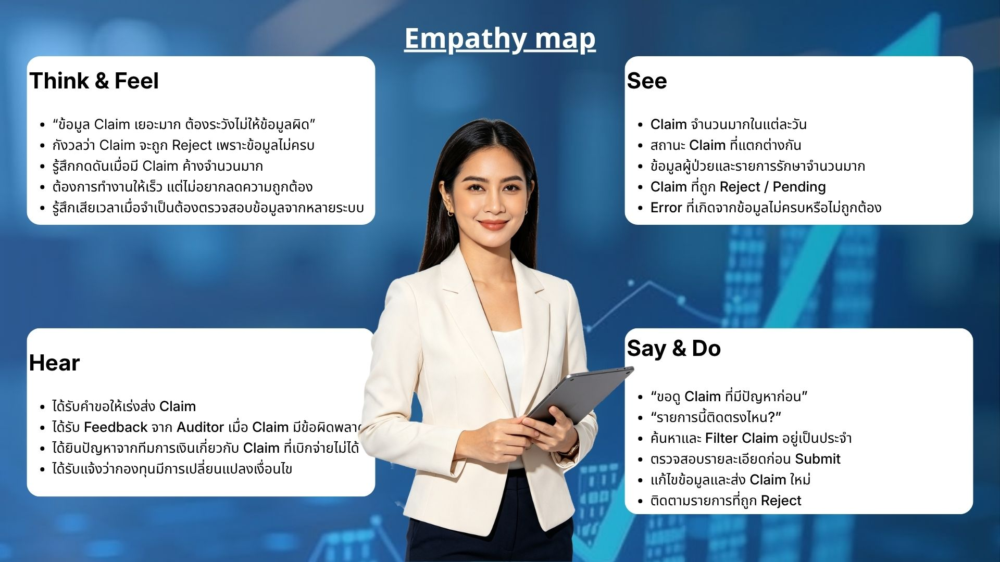
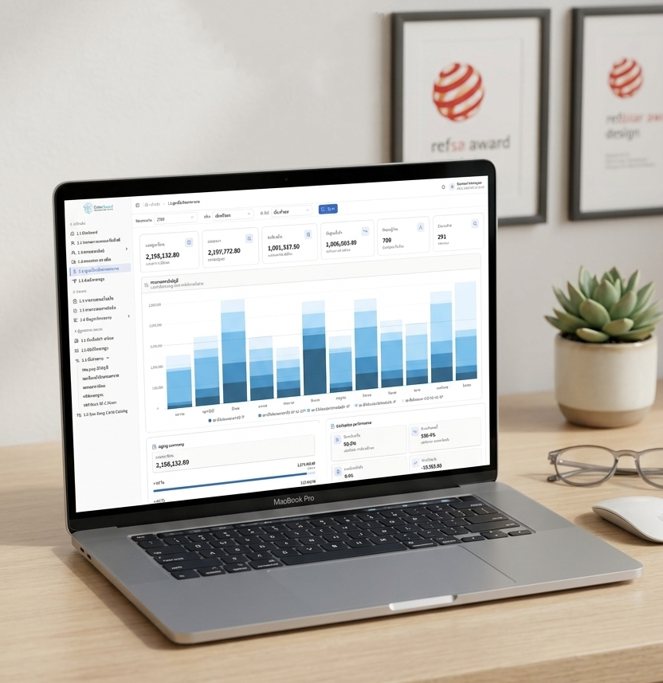

Overview
ClaimGuard is a healthcare revenue cycle management platform designed for billing specialists, financial managers, and hospital administrators. The system centralizes claim tracking, eligibility verification, documentation auditing, and revenue analytics into a unified interface. The project focuses on reducing billing errors that delay reimbursements and providing actionable financial insights that help revenue cycle teams prioritize and resolve claims more efficiently.
Design thinking
Empathize
Research explored how billing specialists, financial managers, and hospital administrators manage the revenue cycle and where the process breaks down. Interviews revealed that billing teams spend significant time manually tracking claims across legacy systems and identifying documentation errors without clear prioritization. Financial managers described difficulty in getting a real-time view of outstanding revenue and the status of denied claims. User Personas were developed for billing specialists, revenue cycle managers, and hospital CFOs. Empathy Maps captured the frustration of managing high claim volumes with limited visibility and the pressure of meeting reimbursement timelines.
.jpg)

Define
Three primary problem areas were identified: claim data scattered across legacy systems requiring manual review, billing errors delaying reimbursements without clear prioritization, and financial reports showing raw data without actionable insights for quick resolution. Problem Statements and Design Goals were established to guide the solution toward a platform that surfaces the right claim at the right time, automates error flagging, and presents financial data in a format that supports fast decision-making. User Journey Maps traced the claim lifecycle from submission to reimbursement for each billing role.


Ideate
Ideation focused on how to organize the revenue cycle workflow in a way that reduces manual effort and surfaces the most important claims at each stage. User Flows mapped the billing specialist's claim review workflow, the error resolution process, and the financial manager's reporting and analytics interaction. A Sitemap structured the platform around the core revenue cycle stages — submission, verification, tracking, error resolution, and reporting — ensuring that each team member could access the tools most relevant to their responsibilities without navigating through unrelated features.


Mood and tone
ClaimGuard's visual direction is professional, structured, and precise. The interface uses a clean layout with clear data hierarchy, neutral tones accented by purposeful status colors, and a typography system that supports scanning large volumes of financial data efficiently. The design communicates reliability and accuracy — values essential in a healthcare billing environment.


